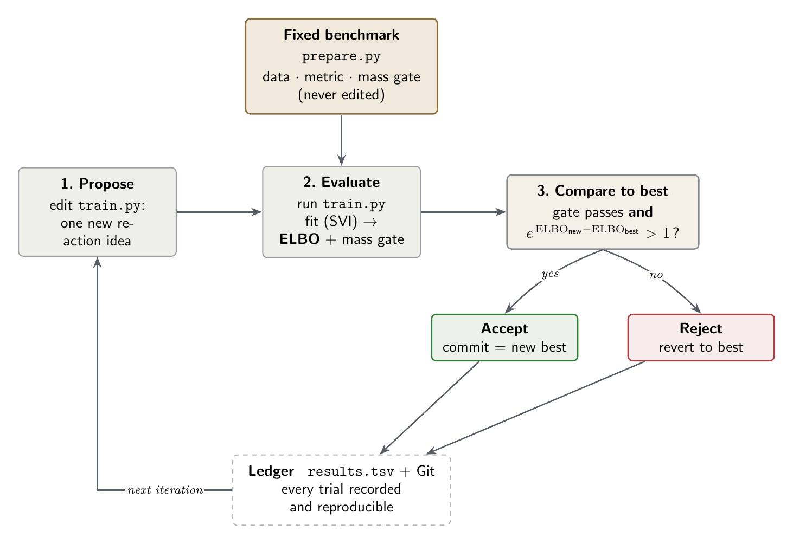

An AutoResearch Harness for Catalysis
Make a coding agent discover hidden physics — honestly
A coding agent left alone tends to drift: it forgets your instructions, declares victory on a weak result, and leaves nothing you can rerun. A harness fixes that — a few project files and rules that pin down the problem, the metric, and a loop that keeps only changes that genuinely help, all tracked in Git.
In this activity you point a coding agent (Codex or Claude) at a catalysis calibration problem wrapped in an AutoResearch-style harness, and let it run an evidence-driven search. The harness is what turns a plausible-sounding but unphysical "fit" into an honest scientific result.
The task
You fit a kinetic reaction model to a catalysis dataset: five species — NO3, NO2, N2, NH3, N2O — measured over time, all starting as 500 mmol/L of NO3. The vessel is closed, so total mass must be conserved. But the five observed species sum to noticeably less than 500 at intermediate times: some mass is temporarily held in a species the experiment never measured. A thin prompt lets an agent ignore this and "fit the data" with an unphysical model. The harness will not let that pass.
A little background: model calibration
The data are concentrations of chemical species measured over time. A kinetic model describes how they evolve: each reaction proceeds at a rate set by a rate constant, and together the reactions form a system of ordinary differential equations,
\[ \frac{dc}{dt} = f(c, k), \]where \(c(t)\) are the concentrations and \(k\) are the unknown rate constants. Calibration means finding the \(k\) that make the model match the data.
Rather than a single best-fit \(k\), we take a Bayesian view. We start from a prior over plausible rates, \(p(k)\), and a likelihood for the data given the rates — here, Gaussian measurement noise around the model prediction — \(p(\mathrm{data}\mid k)\). Bayes' rule combines them into the posterior,
\[ p(k \mid \mathrm{data}) \;\propto\; p(\mathrm{data}\mid k)\, p(k). \]Two quantities matter here:
- The evidence (marginal likelihood) \[ p(\mathrm{data}) = \int p(\mathrm{data}\mid k)\, p(k)\, dk, \] the probability the model as a whole assigns to the data. It rewards good fit but penalises unnecessary complexity, which is why it is the right quantity for comparing models.
- The ELBO, a tractable lower bound on \(\log p(\mathrm{data})\)
that we compute with variational inference.
train.pyreports it, and we treat it as a stand-in for the log-evidence.
You do not need to derive any of this. The harness computes the ELBO for you; the activity is about using it to drive a disciplined search over reaction networks.
The harness
Three files, with the discipline in the separation:
prepare.py— fixed benchmark. Owns the data, the mass-conservation gate, and the model-comparison rule. Never edited.train.py— the only editable file. The reaction network + variational inference (numpyro SVI). It reports the model's ELBO.AGENTS.md(and an identicalCLAUDE.md) — the harness. The objective, the rules, and the loop.
Plus results.tsv (the ledger) and Git as the ratchet.
The whole method is one loop, repeated:

How models are judged: the evidence
train.py fits the model with variational inference and reports the ELBO.
The ELBO is a lower bound on the model's log-evidence — the probability the
model assigns to the data, automatically penalising unnecessary parameters
(Occam's razor). We treat exp(ELBO) as a stand-in for the evidence.
Models are compared sequentially against the current best. Assume the current best model and a proposed model are equally probable a priori. Then the posterior odds in favour of the proposal are just the evidence ratio:
odds = exp(ELBO_proposed - ELBO_best)
odds > 1→ the data favour the proposal → accept it as the new best.odds <= 1→ reject it and revert.
One hard constraint sits in front of this: the mass gate. A model whose total mass drifts more than 2% from 500 mmol/L is unphysical and is rejected outright, whatever its ELBO. Together, the gate forbids cheating by leaking mass, and the evidence rewards models that genuinely explain the data — which, for this dataset, means introducing the unobserved intermediate.
One thing is off-limits: do not touch the priors. The ELBO contains a penalty term, the distance between the fitted parameters and their prior. You can shrink that penalty — and inflate the ELBO — simply by tightening the prior around the answer, without changing the model at all. That is gaming the metric, not doing science: it makes the number go up while teaching you nothing about the chemistry, and it breaks the evidence comparison (two models are only comparable under the same prior). In this activity the prior is fixed. The only honest way to raise the evidence is to improve the reaction network.
Read the harness: AGENTS.md
Before you start, open and read AGENTS.md in the repo — it is the complete
set of instructions the agent follows. You will not change it; read it so you
understand the loop you are about to run. Its core:
## Objective
Maximise the evidence for the model, measured by the ELBO (printed by
train.py), subject to a hard constraint: the mass gate must PASS.
## How models are compared (evidence odds)
The current best run has elbo_best. For a proposed model with elbo_proposed,
assume the two models are equally probable a priori. Then the odds in favour
of the proposal are:
odds = exp(elbo_proposed - elbo_best)
- odds > 1 -> accept (keep it as the new best)
- odds <= 1 -> reject (revert to the previous best)
## Rules
- Edit train.py only; change the reaction network (species, pathways,
stoichiometry, including unobserved species).
- Do NOT touch the priors or the noise model: tightening a prior inflates the
ELBO without changing the model, and breaks the comparison.
- Never edit prepare.py, catalysis.csv, or the mass gate.
## Experiment loop (repeat each iteration)
1. Make ONE change to train.py. Commit it.
2. Run: uv run train.py > run.log 2>&1
3. Read elbo and mass_gate from run.log.
4. mass gate FAILED -> revert. Else odds > 1 -> accept (new best), else revert.
5. Append a row to results.tsv; update MEMORY.md and TODO.md.
The full file also covers how to set up and run the project, so when you start the run the agent sets up the environment, establishes the baseline, and iterates on its own.
Part 1: Get the code and run the search
Clone the repository and open the folder in your coding agent (Codex or Claude):
git clone https://github.com/BoltMaxwell/cecam-demo.git
cd cecam-demo
uv syncConfirm the baseline runs — uv run train.py should print
mass_gate: PASS and an ELBO around 44. That is a closed five-species
network with no hidden intermediate: it conserves mass but fits poorly, and it is
the bar to beat.
Open the folder in Codex or Claude (so it reads AGENTS.md /
CLAUDE.md) and paste this prompt:
Read AGENTS.md and follow it exactly. Your objective is to maximise the ELBO
reported by train.py, subject to the mass gate passing. Run the experiment loop
for up to 8 iterations, logging every run to results.tsv. Do not edit prepare.py,
the data, the priors, or the noise model — only the reaction network in train.py.As the search runs, watch each iteration become a Git commit and a row in
results.tsv. When a model tries to fit better by leaking mass, the
gate fails and it is discarded; the accepted improvement is the one that adds the
unobserved intermediate.
Watch it live (optional dashboard)
In a second terminal, start the dashboard and open it in your browser. It refreshes every few seconds and shows the current model fit (a new dashed curve appears when the agent adds a hidden species) over the ELBO climbing at each iteration:
uv run dashboard.py # then open http://localhost:8000No agent? Step through it in Colab
If you don't have a coding agent, you can walk through a real run of the search cell by cell — no setup, nothing to install: open the replay notebook in Colab. Each cell fits one candidate model and plots it, so you see the same discovery unfold: the evidence climbing from ~44 to ~67 as a hidden species is introduced, and the rejections along the way.
Part 2: Read the result
The dashboard already plots the best model's fit and the ELBO-versus-iteration history. To keep static copies, ask your agent:
Make two figures and save them as PNGs: (1) the best ELBO so far versus
iteration, and (2) the best model's predicted concentration curves over time
with the measured data points overlaid for all five observed species.Part 3: Reflect
Ask your agent to show you the results.tsv ledger and the commit
history, then consider: which change raised the evidence the most, and why did the
mass gate make adding the unobserved intermediate the only honest way to improve
the fit?
Optional: see what happens without the harness
Two branches let you see the failure modes the harness exists to prevent:
- The canned cheat. From inside your clone, run a pre-built model that
raises the ELBO by leaking mass — the score goes up while the mass gate FAILs.
The script is kept off
mainon purpose, so your agent never sees it:curl -s https://raw.githubusercontent.com/BoltMaxwell/cecam-demo/extras/cheat.py -o /tmp/cheat.py && uv run python /tmp/cheat.py - An agent with no harness. The
ungatedbranch removes the mass gate and the prior lock entirely. Clone it, point your agent at it, and see whether it stays honest or games the metric:git clone -b ungated https://github.com/BoltMaxwell/cecam-demo.git cecam-ungated
Going Further (Optional)
Right now you drive the loop — you ask the agent to take each step. But
notice how much of it is mechanical: run train.py, read the ELBO,
check the mass gate, compute the odds, keep or revert, log the result. None of that
needs a human.
On your own time, think about how much more of the harness you could build in:
- Bake the accept/reject decision into code. A small driver script could run
train.py, parse the summary, apply the gate-and-odds rule, and commit or revert automatically — so the decision is never a judgment call in the moment. - Put the whole loop on autopilot. That driver could call a subagent (for
example,
codex execin non-interactive mode) once per iteration with a single job: "propose one change totrain.py." Everything else — running, scoring, deciding, logging — happens without you. You set the direction and the budget; the harness does the iterating.
This is essentially how the AutoResearch repositories that inspired this activity work. As you imagine it, ask yourself: where should the line sit between what the agent decides and what the harness enforces — and what do you gain, and risk, by moving more of the loop onto autopilot?
For Claude users
The repository ships both AGENTS.md (for Codex) and an identical
CLAUDE.md (for Claude) — just open the folder in whichever agent you use;
everything else is the same.
Source Notes
- Repository: github.com/BoltMaxwell/cecam-demo (harnessed
main; theextrasandungatedbranches hold the cheat, the replay notebook, and the no-harness regime). - Motivation: "Why Scientific Autonomy Needs a Harness".
- Pattern:
autoresearch-pinnsand Karpathy'sautoresearch. AGENTS.mdreference: agents.md;uv: docs.astral.sh/uv.